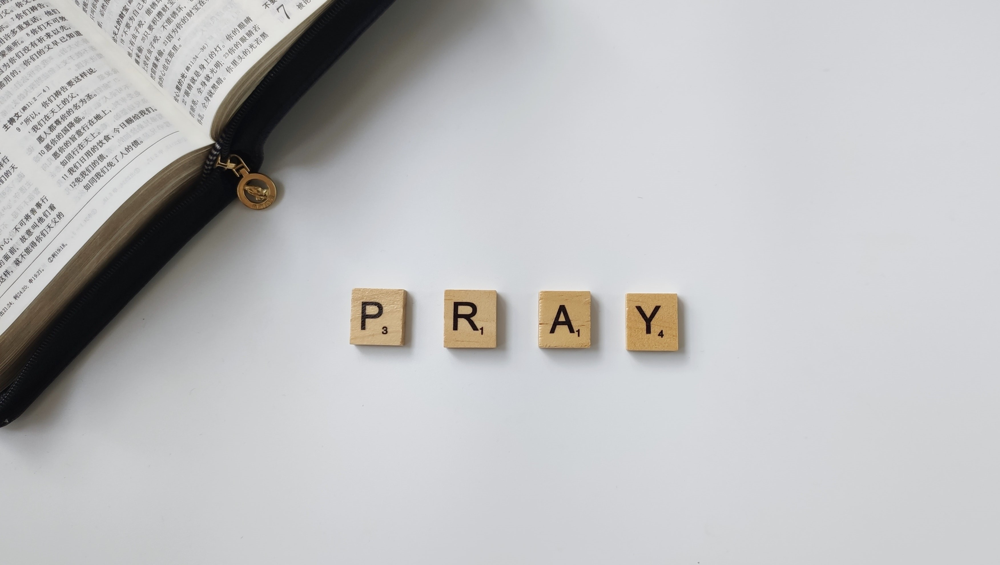

1. “Laudato si’, mi’ Signore” – “Praise be to you, my Lord”. In the words of this beautiful canticle, Saint Francis of Assisi
reminds us that our common home is like a sister with whom we share our life and a beautiful mother who opens her arms to embrace us.
“Praise be to you, my Lord, through our Sister, Mother Earth, who sustains and governs us, and who produces various fruit with coloured flowers and herbs”.
2. This sister now cries out to us because of the harm we have inflicted on her by our irresponsible use and abuse of the goods with which God has endowed her.
We have come to see ourselves as her lords and masters, entitled to plunder her at will. The violence present in our hearts, wounded by sin, is also reflected
in the symptoms of sickness evident in the soil, in the water, in the air and in all forms of life. This is why the earth herself, burdened and laid waste, is
among the most abandoned and maltreated of our poor; she “groans in travail” (Rom 8:22). We have forgotten that we ourselves are dust of the earth (cf. Gen 2:7);
our very bodies are made up 1.
Canticle of the Creatures, in Francis of Assisi: Early Documents, vol. 1, New York-London-Manila, 1999, 113-114.
 Always Remember our King
Always Remember our King